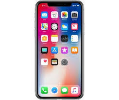

|
iphone11 |
The iPhone X has to be one of the most-talked about tech products of 2017, and introduces a brand new paradigm for interaction, with gestures replacing buttons and a larger screen than on any previous iPhone. It shares most of its internals with the iPhone 8 and iPhone 8 Plus, including Apple’s own A11 Bionic chip and support for wireless charging. However, the 5.8-inch AMOLED panel is a first for any iPhone. Overall, the iPhone X display is great. The notch at the top contains the front camera and 3D sensors that make Face ID recognition possible. It works seamlessly and reliably on most |
AED3500 |
|
iphone7 |
The iPhone X has to be one of the most-talked about tech products of 2017, and introduces a brand new paradigm for interaction, with gestures replacing buttons and a larger screen than on any previous iPhone. It shares most of its internals with the iPhone 8 and iPhone 8 Plus, including Apple’s own A11 Bionic chip and support for wireless charging. However, the 5.8-inch AMOLED panel is a first for any iPhone. Overall, the iPhone X display is great. The notch at the top contains the front camera and 3D sensors that make Face ID recognition possible. It works seamlessly and reliably on most |
AED3700 |
 |
iphoneSE |
The iPhone X has to be one of the most-talked about tech products of 2017, and introduces a brand new paradigm for interaction, with gestures replacing buttons and a larger screen than on any previous iPhone. It shares most of its internals with the iPhone 8 and iPhone 8 Plus, including Apple’s own A11 Bionic chip and support for wireless charging. However, the 5.8-inch AMOLED panel is a first for any iPhone. Overall, the iPhone X display is great. The notch at the top contains the front camera and 3D sensors that make Face ID recognition possible. It works seamlessly and reliably on most |
AED4000 |
|  |
iphoneX |
The iPhone X has to be one of the most-talked about tech products of 2017, and introduces a brand new paradigm for interaction, with gestures replacing buttons and a larger screen than on any previous iPhone. It shares most of its internals with the iPhone 8 and iPhone 8 Plus, including Apple’s own A11 Bionic chip and support for wireless charging. However, the 5.8-inch AMOLED panel is a first for any iPhone. Overall, the iPhone X display is great. The notch at the top contains the front camera and 3D sensors that make Face ID recognition possible. It works seamlessly and reliably on most |
AED2500 |
 |
iphoneXR |
The iPhone X has to be one of the most-talked about tech products of 2017, and introduces a brand new paradigm for interaction, with gestures replacing buttons and a larger screen than on any previous iPhone. It shares most of its internals with the iPhone 8 and iPhone 8 Plus, including Apple’s own A11 Bionic chip and support for wireless charging. However, the 5.8-inch AMOLED panel is a first for any iPhone. Overall, the iPhone X display is great. The notch at the top contains the front camera and 3D sensors that make Face ID recognition possible. It works seamlessly and reliably on most |
AED2800 |